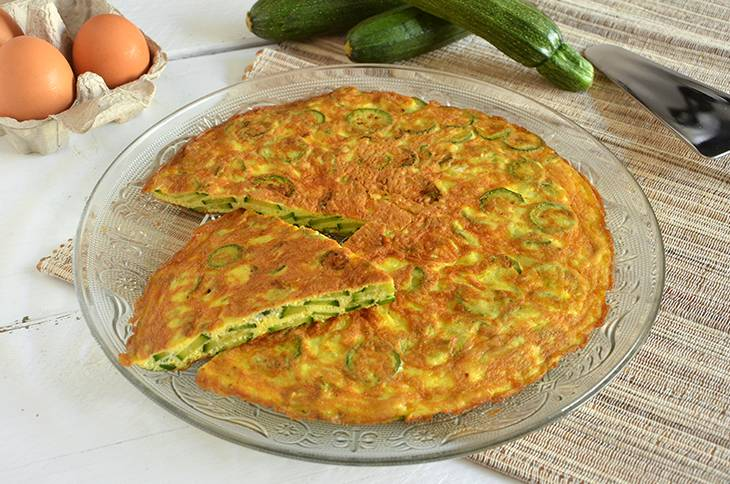

Egg-straordinary Frittata: A Slice of Italy in Your Kitchen!

Recipe for an amazing frittata
Crack some eggs and slice up the zucchini, it’s frittata time! This Italian classic is like a pizza, but instead of dough, we’re using fluffy eggs as the base, and trust me, it’s no yolk! Whisk together eggs, parmesan, and a pinch of humor, then fold in the zucchini with a flip of finesse. Cook until golden – it’s the egg-squisite, veggie-packed hero of brunch!
The tale of the frittata is as layered as the dish itself. Born in the kitchens of Italy, where ‘waste not, want not’ is the culinary mantra, this eggy creation became the go-to for leftover veggies. It’s a dish that says, “I’m sophisticated enough for your dinner party, but easy-going for your Tuesday night.” So, whisk away and let the frittata fun begin!
Ingredients
- Zucchini: 2 medium-sized, sliced into thin rounds
- Eggs: 6 large, whisked with dreams and a dash of reality
- Parmesan: 1/2 cup, rated like it's the last cheese on earth
- Salt: A pinch, or, for the more poeically inclined, just a wisper of the sea
- Black pepper: A few good twists, for that spicy kick
- Olive oil: 2 tablespoons, the liquid gold of the kitchen
- Garlic: 2 cloves, minced to keep the conversation lively
- Onion: 1 small, diced with precision
What do i do whit em?
- Prep talk
- Heat the olive oil in a pan over medium flame
- Toss in the onion and garlic, then sauté them until they are golden
- Zucchini tango
- Slide in the zucchini rounds and let them sizzle until they're tender and tan
- Eggstravaganza
- Whisk the eggs with salt, pepper, and parmesan with the enthusiasm of a game show host
- Pour the egg mixture over the zucchini, like a cascade of sunshine
- Flip & sizzle
- Scatter the basil like confetti over the bubbling mixture
- Once the bottom is set, perform a daring flip - or use a plate if you're not feeling circus-y today
- Cook the other side until it's just as golden and fabulous as the other
- Serving time
- Slide the frittata onto a plate with the grace of a egg-y ballerina
- Cut into wedges and serve with a side of applause
And ta-da:
There you have it, a frittata that's sure to crack a smile on anyone face -
expecially that grumpy old italian gran that you got there!